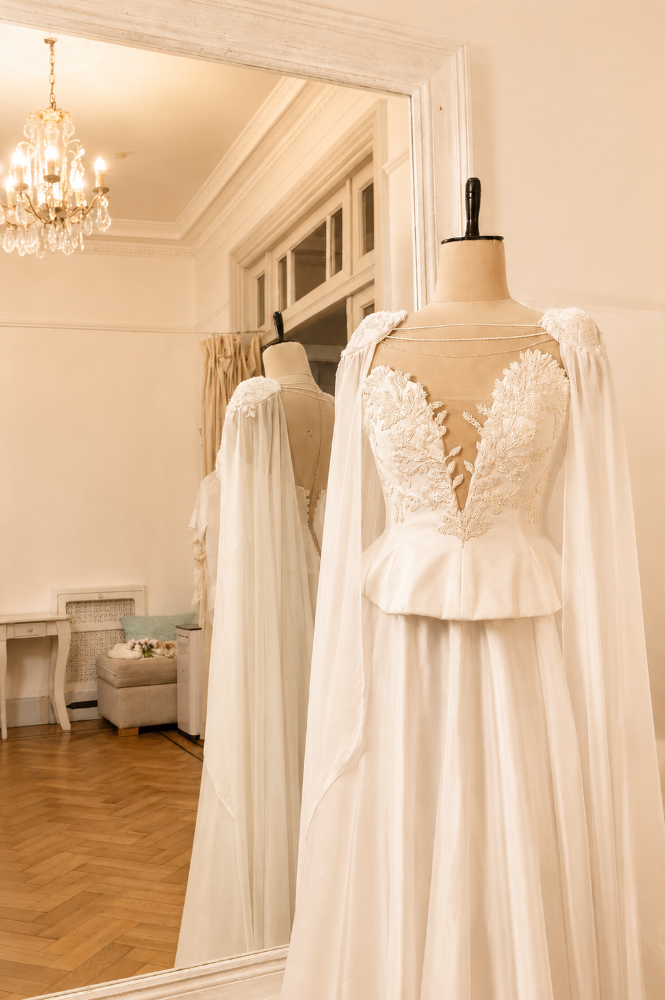

<div id="smooth-wrapper">
  <div id="smooth-content">
    <div class="grid grid-cols-1 md:grid-cols-2 w-full md:h-screen bg-aldy-white">
      <!-- Columna izquierda: fija -->
      <div class="relative hidden md:block h-screen w-full overflow-hidden">
        
        <!-- Degradado -->
        <div
          class="absolute inset-0 z-10 pointer-events-none bg-[linear-gradient(to_top_right,_rgba(221,198,179,1)_0%,_rgba(221,198,179,0.8)_10%,_rgba(221,198,179,0.5)_20%,_rgba(221,198,179,0.2)_75%,_transparent_100%)]"
          style="clip-path: ellipse(65% 72% at 28% 50%);">
        </div>
      </div>

      <!-- Columna derecha -->
      <div #scrollCol (scroll)="onScroll()"
        class="auth-scroll-col relative md:h-screen md:overflow-y-auto px-8 sm:px-12 py-10 flex flex-col">
        <!-- Flor decorativa -->
        <div class="absolute bottom-0 right-0 pointer-events-none select-none" style="z-index:0;">
          
        </div>

        <!-- Contenido -->
        <div class="relative flex-1 flex flex-col justify-center items-center w-full" style="z-index:1;">
          <div class="w-full max-w-sm">
            <router-outlet></router-outlet>
          </div>
        </div>

        <!-- Flecha scroll -->
        <div (click)="scrollToBottom()"
          class="md:absolute bottom-6 right-10 flex flex-col items-center gap-1 cursor-pointer pointer-events-auto transition-all duration-700"
          [class.opacity-0]="!showArrow" [class.opacity-100]="showArrow" [class.pointer-events-none]="!showArrow"
          style="z-index:10;">
          <span class="NewAldyFontType4 tracking-[0.18em] uppercase text-[12px] text-aldy-green-gray">
            Deslizá
          </span>
          <svg class="w-4 h-4 text-aldy-green-gray animate-bounce" fill="none" viewBox="0 0 24 24" stroke="currentColor"
            stroke-width="1.5">
            <path stroke-linecap="round" stroke-linejoin="round" d="M19 9l-7 7-7-7" />
          </svg>
        </div>
      </div>
    </div>
    <app-footer></app-footer>
  </div>
</div>